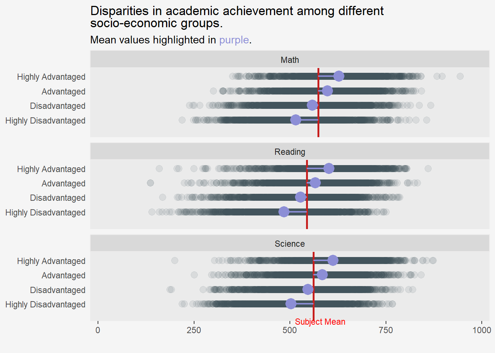

pacman::p_load(tidyverse, haven, patchwork,
scales, ggridges, ggdist, ggtext,
intsvy, grid, tidyverse, shadowtext,
ggpubr)Take-on Exercise 2: DataVis Makeover For Take-home Exercise 1
1 Overview
In the previous Take-home Exercise, we utilised Exploratory Data Analysis methods and ggplot functions to uncover the distribution of performance among Singaporean students in mathematics, reading, and science. We also explored the relationships between these performance metrics and factors such as schools, gender, and socioeconomic status, leveraging data from the PISA Student Questionnaire Survey.
In this post, the objective is to enhance the original visualizations created by a fellow classmate based on Ben Jones’ data visualisation four quadrants of clarity and aesthetic.
2 Getting Started
2.1 Loading Packages
| Library | Description |
|---|---|
| tidyverse | A collection of core packages designed for data science, used extensively for data preparation and wrangling. |
| haven | To enable R to read and write various data formats such as SAS and SPSS. |
| patchwork | For preparing composite figure created using ggplot2. |
| scales | For data labels and annotations for ggplot2 |
| ggridges | For ridgeline plots that create the impression of a mountain range. They can be useful for visualising changes in distributions over time or space. |
| ggpubr | For publication-ready plots. |
| ggdist | For visualisations of distributions and uncertainty. |
| ggtext | Supports improved text rendering for ggplot2. |
| ggalt | A compendium of ‘geoms’, ‘coords’, ‘stats’, scales and fonts for ggplots2. |
| ggextra | For adding marginal plots to ggplot2. |
The following code chunk uses p_load() of pacman package to check if tidyverse packages are installed in the computer. If they are, the libraries will be called into R.
2.2 PISA Data
First, the 2022 Student Questionnaire dataset is downloaded from OECD’s PISA 2022 Database and imported using the read_sas() function of the haven package.
stu <- read_sas(data_file = "data/cy08msp_stu_qqq.sas7bdat")The dataset is in a tibble dataframe, containing 613,744 observations (rows) across 1,279 variables (columns). Each observation corresponds to an entry from a student who participated in the 2022 PISA survey for students, and the variables correspond to information from students on various aspects of their home, family, and school background.
Note that the first variable CNT refers to the country of response. This is used to filter for Singapore (where CNT = SGP) responses for our analysis. filter() of the dplyr package allows us to perform this extraction of participating country.
stu_SG <- stu %>%
filter(CNT == "SGP")The resulting data contains 6,606 rows/observations across 1,279 columns/variables.
The .rds file format is usually smaller than its SAS file counterpart and will therefore take up less storage space. The .rds file will also preserve data types and classes such as factors and dates eliminating the need to redefine data types after loading the file. For fast and space efficient data storage, files can be exported as RDS and re-imported into R using write_rds() and read_rds() respectively.
write_rds(stu_SG, "data/stu_SG.rds")stu_SG <- read_rds("data/stu_SG.rds")Given that the primary focus of this exercise is to provide feedback the visualisations rather than data pre-processing or the choice of variables, I will be following through the same steps taken by the OP to wrangle the data.
The author uses pisa.mean.pv() function of the instvy package to obtain the mean plausible values out of the 10 plausible values provided in the dataset.
Math_mean_SG <- pisa.mean.pv(pvlabel = paste0("PV",1:10,"MATH"), by="CNT", data=stu_SG)
Read_mean_SG <- pisa.mean.pv(pvlabel = paste0("PV",1:10,"READ"), by="CNT", data=stu_SG)
SCIE_mean_SG <- pisa.mean.pv(pvlabel = paste0("PV",1:10,"SCIE"), by="CNT", data=stu_SG)Math_mean_SG CNT Freq Mean s.e. SD s.e
1 SGP 6606 574.66 1.23 102.8 0.91Read_mean_SG CNT Freq Mean s.e. SD s.e
1 SGP 6606 542.55 1.87 105.89 1.15SCIE_mean_SG CNT Freq Mean s.e. SD s.e
1 SGP 6606 561.43 1.33 99.09 1.1The function generates descriptive statistics for each subject, including the mean, frequency, standard error, and standard deviation.
With that, we can proceed to analyse some of the visualisations shared!
3 DataVis Makeover
In the next few sections, I will step through some of the best practices shared to make storytelling with data more accessible.
3.1 Distribution of Subject Scores
The histograms plotted aim to show the distribution of scores across the 3 subjects, and a overlapping density plot to compare distributions across subjects.
There are several thoughtful features about the original plot.
Clarity
Composite plot: The composite plot offers a comprehensive view of the distributions of all the target variables simultaneously.
Visualise distributions: Histogram is appropriate for showcasing distribution in data.
Appropriate labels: The graph is generally clear, with labels on both axes accompanied by a graph title.
Mean line: The inclusion of mean line serves as a valuable point of comparison across all the 3 plots, aiding in the assessment of subject scores.
Aesthetics
- Colour scheme: The consistent color scheme for each subject throughout the post makes it easier to relate the color to the subject from plot to plot.
However, there are some room for improvement. Each point below corresponds to the annotated labels in the image above.
Clarity
- Graph title: A more concise and informative title that effectively conveys the plot’s key message would enhance clarity.
- x-axis tick marks and scale: Addressing the inconsistent x-axis ranges across the three histograms would enhance comparability. Currently, the tick marks on the x-axis are 250 units apart for the Reading and Science plots, while they are only 200 units apart for the Math plot. This discrepancy makes it challenging to accurately gauge differences. Adopting a consistent scale for the x-axis would facilitate a more precise and straightforward comparison.
- Density plot: The overlapped density plots of all 3 subjects seem quite redundant, especially if the x-axis range can be fixed.
- Mean line: The mean in the annotation is derived from the mean scores across Plausible Values 1 to 10, calculated using the
pisa_mean_pv()function from the intsvy package. However, it’s important to note that the histogram is plotted using PV1 values, leading to potential misinterpretations and inaccuracies.
Aesthetic
- Annotation placement: The annotation for the mean line covers parts of the histogram. Adjusting the position could improve overall aesthetics.
- Orientation of y-axis title: Rotating the y-axis title horizontally would improve reader-friendliness and visual appeal.
Remake
The code chunk below is first used to calculate the mean PV of each subject using PV1.
# Calculate mean values for 3 subjects
mean_m <- round(mean(stu_SG$PV1MATH),0)
mean_r <- round(mean(stu_SG$PV1READ),0)
mean_s <- round(mean(stu_SG$PV1SCIE),0)The remake features similar histograms with trio of colours to represent each of the subject.
- Using
element_markdownwithintheme()enables colour-coding of the graph title. limits()is explicitly declared insidescale_x_continuous()to ensure the range of x-axis used is consistent throughout.
Show the code
# Histogram for Math scores
hist_m <-
ggplot(
stu_SG,
aes(x = PV1MATH)
) +
geom_histogram(
bins = 25,
color = "#f5f5f5",
fill="#629182",
alpha=0.4,
) +
# Sets same breaks on the x-axis
scale_x_continuous(
breaks = scales::pretty_breaks(n = 5),
# Set same limits for both plots for consistency
limits = c(150,950),
) +
# Insert mean line
geom_vline(
aes(xintercept = mean_m),
colour="#3E5058",
linewidth = 0.5,
linetype = "dashed"
) +
# Include annotation for mean line
annotate(
geom = "text",
x = mean_m-50,
y = 870,
label = paste0("Mean: ", mean_m),
color="#3E5058",
size = 3,
) +
labs(x = NULL, y = NULL
) +
theme_minimal() +
theme(
axis.text.y = element_blank(),
axis.text.x = element_blank(),
panel.grid.major = element_blank(),
plot.background = element_rect(fill="#f5f5f5",colour="#f5f5f5")
)
# Histogram for Reading scores
hist_r <-
ggplot(
stu_SG,
aes(x = PV1READ)
) +
geom_histogram(
bins = 25,
color = "#f5f5f5",
fill="#EF6174",
alpha=0.4,
) +
scale_x_continuous(
# Sets same breaks on the x-axis
breaks = scales::pretty_breaks(n = 5),
# Set same limits for both plots for consistency
limits = c(150,950),
) +
# Insert mean line
geom_vline(
aes(xintercept = mean_r),
colour="#3E5058",
linewidth = 0.5,
linetype = "dashed"
) +
# Include annotation for mean line
annotate(
geom = "text",
x = mean_r-50,
y = 870,
label = paste0("Mean: ", mean_r),
color="#3E5058",
size = 3,
) +
labs(x = NULL, y = NULL
) +
theme_minimal() +
theme(
axis.text.y = element_blank(),
axis.text.x = element_blank(),
panel.grid.major = element_blank(),
plot.background = element_rect(fill="#f5f5f5",colour="#f5f5f5")
)
hist_s <-
ggplot(
stu_SG,
aes(x = PV1SCIE)
) +
geom_histogram(
bins = 25,
color = "#f5f5f5",
fill="#FEBc44",
alpha= 0.4,
) +
scale_x_continuous(
# Sets same breaks on the x-axis
breaks = scales::pretty_breaks(n = 5),
# Set same limits for both plots for consistency
limits = c(150,950),
) +
# Insert mean line
geom_vline(
aes(xintercept = mean_s),
colour="#3E5058",
linewidth = 0.5,
linetype = "dashed"
) +
# Include annotation for mean line
annotate(
geom = "text",
x = mean_s-50,
y = 870,
label = paste0("Mean: ", mean_s),
color="#3E5058",
size = 3,
) +
labs(x = "Scores", y = NULL
) +
theme_minimal() +
theme(
axis.text.y = element_blank(),
axis.line.x = element_line(),
panel.grid.major = element_blank(),
plot.background = element_rect(fill="#f5f5f5",colour="#f5f5f5")
)
p1 <- (hist_m / hist_r)
p1 / hist_s +
plot_layout(heights = c(1,1,1)) +
plot_annotation(title="Mean scores in <span style='color: #629182;'>Math</span> > <span style='color: #EF6174;'>Reading</span> and <span style='color: #FEBc44;'>Science</span>.",
subtitle = "Normal distribution across all subjects.",
theme=theme(plot.title = element_markdown(hjust = 0, face="bold"),
plot.background = element_rect(fill="#f5f5f5", colour = "#f5f5f5"),
panel.border = element_blank()))
Clarity
- Graph title: TThe title encapsulates the primary observation derived from the graph. The utilization of colour-coded words for each subject obviates the necessity for a legend, fostering subject identification.
- x-axis tick marks and scale: The histograms consolidated into a single column with a unified x-axis, exhibit aligned bin numbers across each subject, enhancing clarity and comparability.
- Mean Line: The mean using PV1 values for each subject, ensures a more precise benchmarking process, contributing to the graph’s accuracy.
Aesthetic
- Annotation placement: The move of the mean line’s annotation to the top enhances the overall view of the plot, avoiding obstruction.
3.2 Relationship between Scores and School ID
The author opted for a bubble plot, an extension of the scatter plot, to examine the relationship between subject scores and School ID.
Clarity
The graph layout is clear and user-friendly. The tabset format allows easy naivgation across different subjects’ plot.
The Interactive plot with a tooltips makes it convenient to identify School ID, average score, and frequency.
Clarity
- Use of a bubble plot: The bubble plot may not be the most effective way to visualise scores (continuous variable) against School ID (categorical variable). Scatter plots are typically more suited for charting 2 continuous variables.
- Colour scale: The colour transition lacks obvious distinction, most of the points appear to be of similar density. A more contrasting colour scale would improve visual differentiation.
- Colour and location of annotations: Annotations close to the axis may be challenging to locate and can be easily overlooked, especially when they blend in with the colour of the bubbles.
Aesthetic
- Orientation of y-axis title: Rotating the y-axis title horizontally would be more reader-friendly.
- Length of legend name: Shortening the legend’s title or allowing it to extend across a second line would create more space for the actual plot.
Remake
Firstly, as.character() is used to convert the SchID variable from numeric to categorical data type.
# Convert School ID to character
stu_SG <- stu_SG %>%
mutate(CNTSCHID = as.character(CNTSCHID))Using n_distinct we can identify that there are 164 unique school IDs in our dataset.
n_distinct(stu_SG$CNTSCHID)[1] 164Rather than cramming all 164 points of data into a plot, visualising the top 5 and bottom 5 results by subject performanceshould convey the message sufficiently. The below code serves the following purpose:
group_byandmutate;summarize(),count = n()andmean(): This summarizes the grouped data, calculating the count of observations within each school and the overall mean scores for each subject across all schools.dense_rank(avg_sci) <= 5 and dense_rank(desc(avg_sci)) <= 5are then used filter the top 5 and bottom 5 schools based on the average subject scores.
Show the code
stu_SG_schools <-
stu_SG %>%
group_by(CNTSCHID) %>%
mutate(avg_math = mean(c_across(PV1MATH), na.rm=TRUE),
avg_read = mean(c_across(PV1READ), na.rm=TRUE),
avg_sci = mean(c_across(PV1SCIE), na.rm=TRUE)) %>%
summarize(Count = n(),
avg_math = mean(avg_math, na.rm = TRUE),
avg_read = mean(avg_read, na.rm = TRUE),
avg_sci = mean(avg_sci, na.rm = TRUE))
stu_SG_schools_m <-
stu_SG_schools %>%
filter(dense_rank(avg_math) <= 5 | dense_rank(desc(avg_math)) <= 5)
stu_SG_schools_r <-
stu_SG_schools %>%
filter(dense_rank(avg_read) <= 5 | dense_rank(desc(avg_read)) <= 5)
stu_SG_schools_s <-
stu_SG_schools %>%
filter(dense_rank(avg_sci) <= 5 | dense_rank(desc(avg_sci)) <= 5)The remade version showcases a lollipop plot, akin to a barplot, where the traditional bar is transformed into a combination of a line and a dot. This visualisation illustrates the relationship between a numeric variable (average subject scores per school) and a categorical variable (school).
Show the code
lolly_m <-
ggplot(stu_SG_schools_m,
aes(x = avg_math,
y = reorder(CNTSCHID, avg_math))) +
geom_segment(aes(x=0,
xend=avg_math,
y=CNTSCHID,
yend=CNTSCHID),
color= if_else(stu_SG_schools_m$CNTSCHID %in% c("70200003"), "#69aebf",
if_else(stu_SG_schools_m$CNTSCHID %in% c("70200056", "70200115", "70200149"), "#dc7068","#989d9e")
),
alpha = 0.5,
linewidth= 4.2)+
geom_point(color= if_else(stu_SG_schools_m$CNTSCHID %in% c("70200003"), "#69aebf",
if_else(stu_SG_schools_m$CNTSCHID %in% c("70200056", "70200115", "70200149"), "#dc7068","#989d9e")),
alpha = 0.8,
size = 3.5)+
geom_text(data = stu_SG_schools_m,
aes(label = paste(CNTSCHID),
x = 130,
y = CNTSCHID),
color = if_else(stu_SG_schools_m$CNTSCHID %in% c("70200003", "70200056", "70200115", "70200149"),
"white",
"#2e272A"),
size = 3,
fontface= if_else(stu_SG_schools_m$CNTSCHID %in% c("70200003", "70200056", "70200115", "70200149"),
"bold",
"plain")) +
# Data callout
geom_text(aes(label=round(avg_math,0)
),
color=if_else(stu_SG_schools_m$CNTSCHID %in% c("70200003"), "#69aebf",
if_else(stu_SG_schools_m$CNTSCHID %in% c("70200056", "70200115", "70200149"), "#dc7068","#2e272A")
),
size=3,
nudge_x= 30, # move it to the right of the point
hjust= 0, # left justify
fontface= if_else(stu_SG_schools_m$CNTSCHID %in% c("70200003", "70200056", "70200115", "70200149"),
"bold",
"plain")) +
# Insert mean line
geom_vline(
aes(xintercept = mean_m),
colour="#7161f0",
linewidth = 0.5,
linetype = "dashed"
) +
# Include annotation for mean line
annotate(
geom = "text",
x = mean_m + 145,
y = 3.5,
label = paste0("Mean:\n", mean_m),
color="#7161f0",
size = 3.2,
) +
scale_x_continuous(
# Set same limits for plots for consistency
limits = c(0,800),
) +
theme_minimal()+
labs(
x = "Math",
y = NULL
) +
theme(
axis.text.y = element_blank(),
axis.ticks.y = element_blank(),
axis.text.x = element_blank(),
plot.background = element_rect(fill="#f5f5f5",colour="#f5f5f5"),
panel.grid = element_blank()
)
lolly_r <-
ggplot(stu_SG_schools_r,
aes(x = avg_read,
y = reorder(CNTSCHID, avg_read))) +
geom_segment(aes(x=0,
xend=avg_read,
y=CNTSCHID,
yend=CNTSCHID),
color= if_else(stu_SG_schools_r$CNTSCHID %in% c("70200003"), "#69aebf",
if_else(stu_SG_schools_r$CNTSCHID %in% c("70200056", "70200115", "70200149"), "#dc7068","#989d9e")
),
alpha = 0.5,
linewidth= 4.2)+
geom_point(color= if_else(stu_SG_schools_r$CNTSCHID %in% c("70200003"), "#69aebf",
if_else(stu_SG_schools_r$CNTSCHID %in% c("70200056", "70200115", "70200149"), "#dc7068","#989d9e")),
alpha = 0.8,
size = 3.5)+
geom_text(data = stu_SG_schools_r,
aes(label = paste(CNTSCHID),
x = 130,
y = CNTSCHID),
color = if_else(stu_SG_schools_r$CNTSCHID %in% c("70200003", "70200056", "70200115", "70200149"),
"white",
"#2e272A"),
size = 3,
fontface= if_else(stu_SG_schools_r$CNTSCHID %in% c("70200003", "70200056", "70200115", "70200149"),
"bold",
"plain")) +
# Data callout
geom_text(aes(label=round(avg_read,0)
),
color=if_else(stu_SG_schools_r$CNTSCHID %in% c("70200003"), "#69aebf",
if_else(stu_SG_schools_r$CNTSCHID %in% c("70200056", "70200115", "70200149"), "#dc7068","#2e272A")
),
size=3,
nudge_x= 30, # move it to the right of the point
hjust= 0, # left justify
fontface= if_else(stu_SG_schools_r$CNTSCHID %in% c("70200003", "70200056", "70200115", "70200149"),
"bold",
"plain")) +
# Insert mean line
geom_vline(
aes(xintercept = mean_r),
colour="#7161f0",
linewidth = 0.5,
linetype = "dashed"
) +
# Include annotation for mean line
annotate(
geom = "text",
x = mean_r + 145,
y = 3.5,
label = paste0("Mean:\n", mean_r),
color="#7161f0",
size = 3.2,
) +
scale_x_continuous(
# Set same limits for plots for consistency
limits = c(0,800),
) +
theme_minimal()+
labs(
x = "Reading",
y = NULL
) +
theme(
axis.text.y = element_blank(),
axis.ticks.y = element_blank(),
axis.text.x = element_blank(),
plot.background = element_rect(fill="#f5f5f5",colour="#f5f5f5"),
panel.grid = element_blank()
)
lolly_s <-
ggplot(stu_SG_schools_s,
aes(x = avg_sci,
y = reorder(CNTSCHID, avg_sci))) +
geom_segment(aes(x=0,
xend=avg_sci,
y=CNTSCHID,
yend=CNTSCHID),
color= if_else(stu_SG_schools_s$CNTSCHID %in% c("70200003"), "#69aebf",
if_else(stu_SG_schools_s$CNTSCHID %in% c("70200056", "70200115", "70200149"), "#dc7068","#989d9e")
),
alpha = 0.5,
linewidth= 4.2)+
geom_point(color= if_else(stu_SG_schools_s$CNTSCHID %in% c("70200003"), "#69aebf",
if_else(stu_SG_schools_s$CNTSCHID %in% c("70200056", "70200115", "70200149"), "#dc7068","#989d9e")),
alpha = 0.8,
size = 3.5)+
geom_text(data = stu_SG_schools_s,
aes(label = paste(CNTSCHID),
x = 130,
y = CNTSCHID),
color = if_else(stu_SG_schools_s$CNTSCHID %in% c("70200003", "70200056", "70200115", "70200149"),
"white",
"#2e272A"),
size = 3,
fontface= if_else(stu_SG_schools_s$CNTSCHID %in% c("70200003", "70200056", "70200115", "70200149"),
"bold",
"plain")) +
# Data callout
geom_text(aes(label=round(avg_sci,0)
),
color=if_else(stu_SG_schools_s$CNTSCHID %in% c("70200003"), "#69aebf",
if_else(stu_SG_schools_s$CNTSCHID %in% c("70200056", "70200115", "70200149"), "#dc7068","#2e272A")
),
size=3,
nudge_x= 30, # move it to the right of the point
hjust= 0, # left justify
fontface= if_else(stu_SG_schools_s$CNTSCHID %in% c("70200003", "70200056", "70200115", "70200149"),
"bold",
"plain")) +
# Insert mean line
geom_vline(
aes(xintercept = mean_s),
colour="#7161f0",
linewidth = 0.5,
linetype = "dashed"
) +
# Include annotation for mean line
annotate(
geom = "text",
x = mean_s + 145,
y = 3.5,
label = paste0("Mean:\n", mean_s),
color="#7161f0",
size = 3.2,
) +
scale_x_continuous(
# Set same limits for plots for consistency
limits = c(0,800),
) +
theme_minimal()+
labs(
x = "Science",
y = NULL
) +
theme(
axis.text.y = element_blank(),
axis.ticks.y = element_blank(),
axis.text.x = element_blank(),
plot.background = element_rect(fill="#f5f5f5",colour="#f5f5f5"),
panel.grid = element_blank()
)
lolly_m + lolly_r + lolly_s +
plot_layout(widths=c(1.2,1,1)) +
plot_annotation(title="Uneven distribution of scores across schools",
subtitle="School <span style='color: #69aebf;'>70200003</span> has one of the highest mean scores across all subjects,<br> while schools <span style='color: #dc7068;'>70200056, 70200115, 70200149</span> remained at the bottom consistently.",
theme=theme(plot.title = element_markdown(hjust = 0, face="bold"),
plot.subtitle = element_markdown(hjust = 0),
plot.background = element_rect(fill="#f5f5f5", colour = "#f5f5f5"),
panel.border = element_blank()))
Clarity
- Use of a lollipop plot: The lollipop plot is a straightforward yet effective visualisation of the top and bottom average scores by school. The schools are sorted in descending order based on their scores for each subject to enhance interpretability.
- Colour: The use of colors, with blue highlighting consistently high-performing schools and pink delineating consistently low-performing schools across subjects, serves to direct the reader’s attention towards salient findings.
- Mean line: The inclusion of a mean line, along with annotations, facilitates easy comparison of school performance against the average score for each subject across all schools.
- Chart labelling: Each point in the graph is annotated, enhancing overall clarity and providing additional context to the visual representation.
Aesthetic
- Removal of y-axis: The y-axis labels (School IDs) are labelled within the bar for more efficient use of space since 3 plots are combined.
3.3 Relationship between Gender and Scores
Clarity
Density plot with quantile lines is a good choice of chart that helps put emphasis on the difference in median scores between genders.
-
Aesthetics
Clarity
Aesthetics
Remake
rcp_long <-
stu_SG %>%
select(ST004D01T, PV1MATH, PV1READ, PV1SCIE) %>%
pivot_longer(cols = starts_with("PV1"),
names_to = "subject",
names_prefix="PV1",
values_to="score") %>%
mutate(Gender=(recode(ST004D01T, '1'="Female",
'2'="Male"))) %>%
select(-ST004D01T)3.4 Relationship between Scores and Socioeconomic Status of Students
Clarity
Title summarises the gist of the plot well.
Use of consistent colours for each subject helps reader link colour to subject when looking at different plots.
Aesthetics
Clarity
- x-axis: It would probably be more understandable if the ESCS scores are recoded as there was little context provided with regards to how the scores can be interpreted. If kept on a numerical scale, it would be more intuitive for readers if the axis is shifted to beside where the 0 value is as its not immediately obvious there is a positive and negative side to the ESCS score. x-axis is also repeated thrice in this plot.
Aesthetics
- y-axis title: Adjusting the y-axis title horizontally would improve readability of the plot.
- Graph title: A bolded graph title would stand out more and emphasise on the finding.
Remake
The code chunk below serves assigns a quartile classification to the variable ESCS to create 4 roughly equal-sized groups, recodes the variables to more intuitive categories, and finally orders the variables as socio-economic levels increase.
stu_SG <- stu_SG %>%
mutate(ESCS = ntile(ESCS, 4), .after = ESCS) %>%
mutate(ESCS = recode(ESCS,
`1` = "Highly Disadvantaged",
`2` = "Disadvantaged",
`3` = "Advantaged",
`4` = "Highly Advantaged")) %>%
mutate(ESCS = factor(ESCS,
levels = c("Highly Disadvantaged", "Disadvantaged",
"Advantaged", "Highly Advantaged"),
ordered = TRUE)) The following code chunk prepares the dataset for plotting using pivot_longer() to reshape the data by converting multiple columns into 2 columns. The processed data is then grouped by ECSC category and subject. For each group, it calculates the mean score using the summarise() function
Show the code
bar_escs <-
stu_SG %>%
drop_na(ESCS) %>%
select(ESCS, PV1MATH, PV1READ, PV1SCIE) %>%
pivot_longer(cols = starts_with("PV1"),
names_to = "subject",
names_prefix="PV1",
values_to="score") %>%
mutate(subject = recode(subject,
`MATH` = "Math",
`READ` = "Reading",
`SCIE` = "Science"))
mean_escs <-
bar_escs %>%
group_by(ESCS, subject) %>%
summarise(mean = mean(score, na.rm=TRUE)) %>%
mutate(total_avg = if_else(subject=="MATH", mean_m,
if_else(subject=="READ", mean_r,
mean_s)))The strip plot shows the range, density, and central tendencies of each socio-economic level faceted by subject. The points have low alpha value to visualise the density and the purple points refer to the mean of each subject at a socio-economic level. Lastly, a mean line is added for comparison.
Show the code
ggplot(bar_escs,
aes(x = ESCS, y = score)) +
coord_flip() +
geom_point(size = 3,
alpha = 0.1,
color="#3E5058") +
facet_wrap(~ subject, nrow = 3) +
geom_hline(data = mean_escs,
aes(yintercept = total_avg),
color = "#c71e1d",
size=1) +
geom_segment(
data = mean_escs,
aes(x = ESCS,
xend = ESCS,
y = total_avg,
yend = mean),
color = "#8c8ed6",
size = 0.8,
) +
stat_summary(
fun=mean,
geom="point",
size = 5,
color="#8c8ed6",
) +
scale_y_continuous(limits = c(0, 1000), expand = c(0.02,0.02)) +
labs(x = "English Scores",
y = "",
title="Disparities in academic achievement among different socio-economic<br>groups.",
subtitle="Mean values highlighted in <span style='color: #8c8ed6;'>purple</span>.") +
theme(
legend.position = "none",
#panel.grid.major = element_blank(),
axis.title.y = element_blank(),
axis.text.y = element_text(),
axis.text.x = element_text(),
panel.grid = element_blank(),
axis.ticks.y = element_blank(),
plot.title = element_markdown(hjust=0),
plot.subtitle = element_markdown(hjust = 0),
plot.background = element_rect(fill="#f5f5f5",colour="#f5f5f5"))
Clarity
- x-axis:
- Mean line: e can further highlight that the baseline is the average scores for each subject by adding a line from the average of each ESCS level to the subject average. The result is a combination of a strip and lollipop plot.
Aesthetics
3.5 Breakdown of Scores per Subject

Clarity
Aesthetics
Clarity
Aesthetics
4 Summary
5 References
https://r-graph-gallery.com/web-dumbbell-chart-with-a-gap-column.html